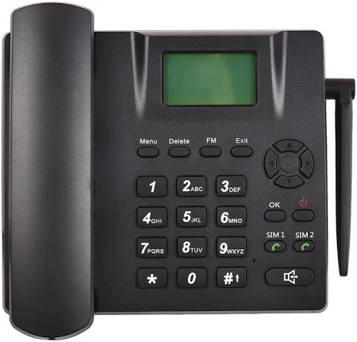
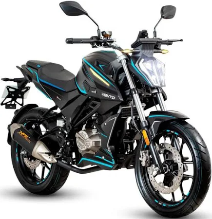

Catalogo de ventas
Reloj para mujer
Caracteristicas
- $318.92 MXN
- Tipo de pantalla: Puntero
- Material del espejo: espejo de vidrio ordinario
- Material de la hebilla: acero inoxidable
- Diámetro de la esfera: 35 mm
- Especificaciones: 1 * reloj
Telefono fijo

Caracteristicas
- $749.00
- Teléfono de escritorio inalámbrico GMS: admite tarjetas SIM duales y frecuencia GSM 850/900/1800/1900, identificador de llamadas; Almacenamiento de 50 llamadas perdidas o recibidas y los últimos diez números marcados; 9 teclas de marcación rápida y función de rellamada, admite llamadas de conferencia tripartitas, etc.
- Batería potente: la batería de iones de litio incorporada de 1000 mAh proporciona hasta 24 horas de tiempo de conversación y 7 días de tiempo de espera (según el entorno de red).
- Gran capacidad de almacenamiento: su teléfono inalámbrico tiene una poderosa agenda telefónica que puede almacenar 300 nombres o números de contacto.
- Antena externa: la antena externa hace que la señal se reciba más estable, elimina los problemas de desconexión y garantiza que cada llamada tenga una calidad de sonido clara y una comunicación sin obstáculos.
Motocicleta

Caracteristicas
- Marca: VENTO
- Tipo de motor: 4 tiempos, enfriado por aceite
- Potencia máxima: 25 HP
- Estilo: Deportiva
- $41,999